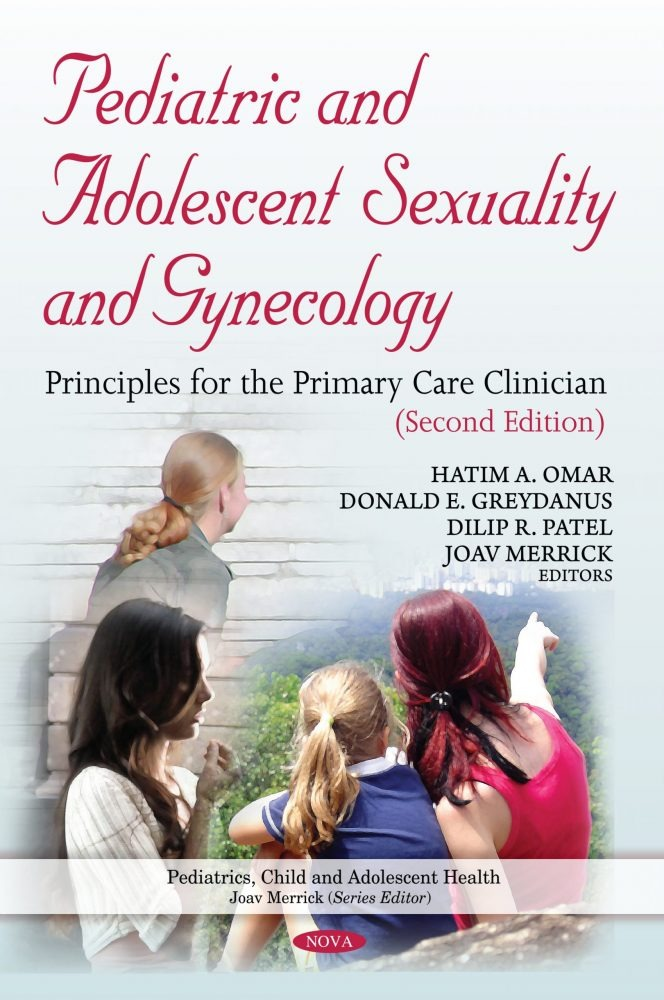
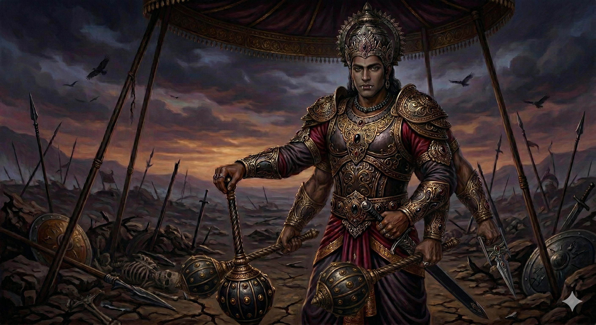

My work with the written word, including upcoming projects.
New/Nueva Opinión
Freelance reporter · 2020-2024 · Battle Creek, MI
For four years I worked with bilingual newspaper New/Nueva Opinión on local Latino issues, figures and events, including for the Kalamazoo Community Foundation-funded series Contributions and Challenges of the Latinx Community
in Kalamazoo. Several
pieces were picked up by Watershed Voice through the Southwest Michigan
Journalism Collaborative.
Editor and proofreader · 2021 · Pan American Health Organization
I helped edit the 2021 edition of the implementation guide for PAHO's
cardiovascular health initiative, a clinical reference used by health ministries
across the region, to improve readability and coherence.

Academic and clinical editing
Editor and proofreader · 2017-2024
I edited a section of the chapter “Sexually Transmitted
Diseases/Infections” for the second edition of Pediatric and Adolescent
Sexuality and Gynecology: Principles for the Primary Care Clinician, alongside
student assessments and pre-publication papers for Western Michigan University's
Homer Stryker M.D. School of Medicine. Separately, three years editing
performance evaluations, case studies and professional correspondence for
obstetrician-gynecologists writing in English as a second language at Queen's
North Hawaii Community Hospital.
YA novel (Working title: Daemonfall)
In progress · Author · 2023-present
A young adult fantasy novel centred on teenage magic users fighting against a demonic invasion in post-apocalyptic Canda.

A Concise History of Riktasthani-yuga
Writing & visual concepts (as part of Project Something) · 2026 · Northeastern University
I did the writing for this multimedia storytelling project in collaboration with Harsh Kumar and Sujan Pokhrel,
centred on fantasy archeologists in a world inspired by Hindu mythology hiding a darker twist.
I also did visual conceptualization, which was then used to create placeholder images using Google Gemini.
Working with web design tools to create unique user experiences.
Adaptive Liquid Glass
Conceptualization, research & case study · 2026 · Northeastern University
Apple's Liquid Glass interface fails WCAG contrast minimums in
bright light and over busy wallpapers. This concept samples the wallpaper and
ambient light in real time and tunes blur, opacity, saturation and tint to hold
text at 4.5:1 — with the target user-configurable up to 7:1 — without discarding
the aesthetic.
Data visualisation · JavaScript, VexFlow · 2025 · Northeastern University
A visualisation that renders daily time spent online as notes on a
musical staff, turning a figure people usually skim as a number into something
with rhythm and shape.
My work in visual design and multimedia production.
Don't Forget to Smile!
Poster series · 2026 · Northeastern University
Five posters using the visual language and classic Swiss design to explore the smiley face as a
symbol hollowed out by commerce: priced at $9.99, lined up on a
slot machine reel, or stamped out on an assembly line.
Short documentary · Director & editor · 2022 · McGill University
A short film chronicling unexpected everyday sources of beauty,
made in the spirit of Jonas Mekas's diary films.
Untitled
Animated short · Sound design & additional animation · 2026 · Northeastern University
A short collaborative animated film based on the six-word prompt "A stopped clock among the ruins".
I contributed sound design, some additional visual editing of a crack spreading through a tower,
and also did a cut for the final second of of animation.
About
For as long as I can remember, I've been fascinated by stories across all types of media, and strived to tell my own in turn.
My specialty is writing, which I've been doing since I was 10 years old — yet I've never lost sight of how visuals, audio and other multimedia elements can make our stories come alive.
To me, the best works are those that leverage not just one medium, but multiple to create a single, cohesive, multi-sensory whole.
From the surreal naturalism of Art Nouveau architecture to the carefully considered mechanics of video games, stories can emerge not just from the words we write down, but from the intersection of many different mediums and methods in even the most unlikely places.
With these things in mind, I've spent the last several years branching out into different mediums to elevate my work and turn it into something greater than the sum of its parts.
I'm currently pursuing a master's degree in digital media at Northeastern University, where I'm taking the skills I've learned to find new ways to tell all kinds of stories, even ones beyond my own.
With years of proven editing experience, multiple group projects under my belt, and a strong and ever-growing foundation in multimedia work, I'm equally at home helping others tell their stories as I am telling my own.
Education & Training
Master of Professional Studies, Digital Media — Northeastern University, 2025-2027
BA English (Cultural Studies) — McGill University, 2022
Video Game Writing — University of British Columbia, 2025
Strategy of Content Management — UC Davis, 2024
Social Media & Marketing — MTF Institute, 2024
Tools
Adobe Creative Suite (Photoshop, Illustrator, InDesign, Premiere Pro)
Figma
HTML, CSS, JavaScript
WordPress
Microsoft Office Suite
Contact
Open to writing, multimedia and design roles remotely and across Canada.